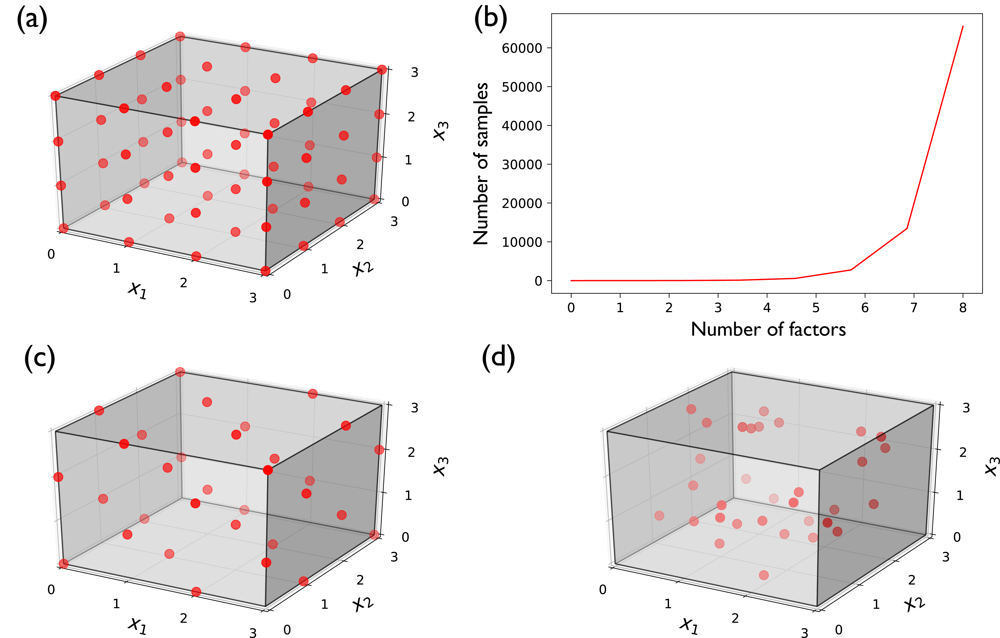

Full and Fractional Factorial Sampling
Full and Fractional Factorial Sampling¶
In full factorial sampling each factor is treated as being discrete by considering two or more levels (or intervals) of its values. The sampling process then generates samples within each possible combination of levels, corresponding to each parameter. This scheme produces a more comprehensive sampling of the factors’ variability space, as it accounts for all candidate combinations of factor levels (Fig. 3.3 (a)). If the number of levels is the same across all factors, the number of generated samples is estimated using \(n^k\), where \(n\) is the number of levels and \(k\) is the number of factors. For example, Fig. 3.3 (a) presents a full factorial sampling of three uncertain factors \((x_1,\) \(x_2,\) and \(x_3)\), each considered as having four discrete levels. The total number of samples necessary for such an experiment is \(4^3=64\). As the number of factors increases, the number of simulations necessary will also grow exponentially, making full factorial sampling computationally burdensome (Fig. 3.3 (b)). As a result, it is common in the literature to apply full factorial sampling at only two levels per factor, typically the two extremes [60]. This significantly reduces computational burden but is only considered appropriate in cases where factors can indeed only assume two discrete values (e.g., when testing the effects of epistemic uncertainty and comparing between model structure A and model structure B). In the case of physical parameters on continuous distributions (e.g., when considering the effects of measurement uncertainty in a temperature sensor), discretizing the range of a factor to only extreme levels can bias its estimated importance.
Fractional factorial sampling is a widely used alternative to full factorial sampling that allows the analyst to significantly reduce the number of simulations by focusing on the main effects of a factor and seeking to avoid model runs that yield redundant response information [49]. In other words, if one can reasonably assume that higher-order interactions are negligible, information about the most significant effects and lower-order interactions (e.g., effects from pairs of factors) can be obtained using a fraction of the full factorial design. Traditionally, fractional factorial design has also been limited to two levels [60], referred to as Fractional Factorial designs 2k-p [61]. Recently, Generalized Fractional Factorial designs have also been proposed that allow for the structured generation of samples at more than two levels per factor [62]. Consider a case where the modeling team dealing with the problem in Fig. 3.3 (a) cannot afford to perform 64 simulations of their model. They can afford 32 runs for their experiment and instead decide to fractionally sample the variability space of their factors. A potential design of such a sampling strategy is presented in Fig. 3.3 (c).
{kind=link}

Alternative designs of experiments and their computational costs for three uncertain factors \((x_1,\) \(x_2,\) and \(x_3)\). (a) Full factorial design sampling of three factors at four levels, at a total of 64 samples; (b) exponential growth of necessary number of samples when applying full factorial design at four levels; (c) fractional factorial design of three factors at four levels, at a total of 32 samples; and (d) Latin Hypercube sample of three factors with uniform distributions, at a total of 32 samples.¶